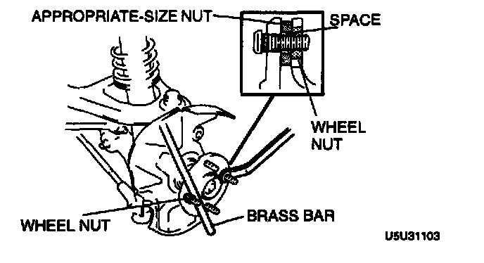

Wheel Stud / Lug Nut: Service and Repair
WHEEL HUB BOLT REPLACEMENT
1. Remove the wheel hub bolt by using the SSTs.
2. As shown in the figure, install the wheel hub bolt into the wheel hub and set a washer and wheelhub nut in the wheel hub bolt.

3. Tighten the wheel hub nut while holding the wheel hub by using a brass bar.